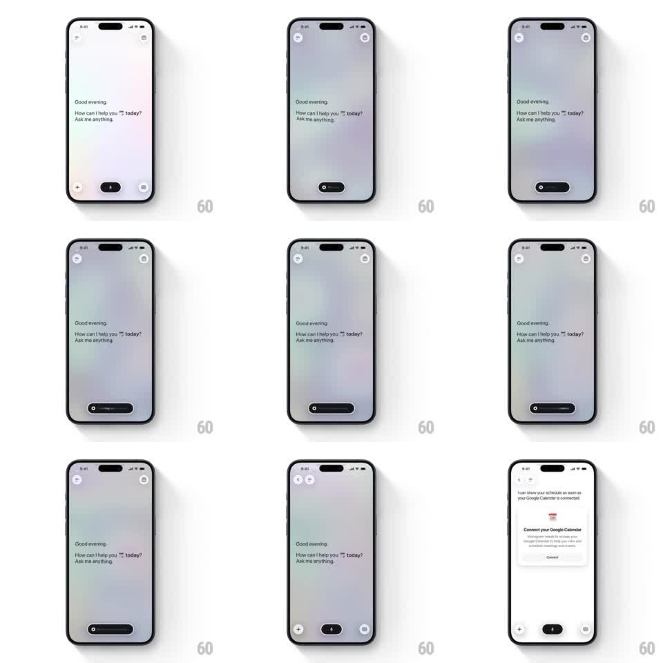

Media
Frame-by-frame

Rebuild this interaction 1:1: Monogram's ambient voice home - a floating status pill on a pastel gradient canvas pulses as it listens, morphs into bottom voice controls, and a "Connect your Google Calendar" card slides up as the screen transitions into the chat layout.

Rebuild this interaction 1:1: Monogram's ambient voice home - a floating status pill on a pastel gradient canvas pulses as it listens, morphs into bottom voice controls, and a "Connect your Google Calendar" card slides up as the screen transitions into the chat layout.
## Integration
Integration: stack-agnostic spec - springs given as stiffness/damping, timed motions as duration + curve; map every value to your framework and animation library of choice.
## Scene
Empty-state assistant home: soft pastel gradient backdrop (lilac to mint, slowly drifting), greeting text block ("Good evening. How can I help you today? Ask me anything.") mid-screen, a small floating dark status pill low-center, and two circular icon buttons top corners.
## Motion spec
Pattern: ambient idle pulse that morphs a floating pill into a bottom control bar, then reveals an action card.
- Idle: the status pill breathes (scale 1 -> 1.06 -> 1, 2s loop, ease-in-out) while the gradient drifts over a ~20s cycle.
- On activation, the pill expands into a wide listening bar (width ~64 -> 200px, 300ms, spring ~280/22) with a "Listening..." label and animated mic dot.
- The pill then docks to the bottom and splits into the standard bar (+ / mic pill / grid), each element fading in with 60ms stagger.
- The greeting block shifts up and left-aligns (translate ~40px, 350ms, ease-out) as the calendar connect card slides up from below (translate 100% -> 0, 400ms, spring ~260/26) with a white surface, provider icon, title, body copy, and Connect button.
## Calibration
- The gradient never stops moving; even static frames should feel alive.
- Card entrance is a single confident spring, no bounce overshoot beyond ~4%.
## Reduced motion
Gradient freezes on a static pastel wash; pill changes state by crossfade (150ms); card fades in at final position (200ms).
## Don't miss
- The listening pill and the final bottom bar share one continuous morph - never unmount the pill.
- The calendar card slides over the gradient, which stays visible behind it.